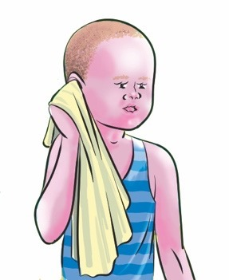

Question
5Picture 5
A pupil drying an ear with a clean towel.
I dry my ears with a
towel.
Question
What have you learnt from the pictures 1-5?
Activity 4
(a) Watch videos on the internet showing the steps for
cleaning the ears.
(b) Clean your ears by following the steps you have learnt.
Exercise 3
1. Mention three (3) items used for cleaning ears.
2. Why is it important to clean your ears?